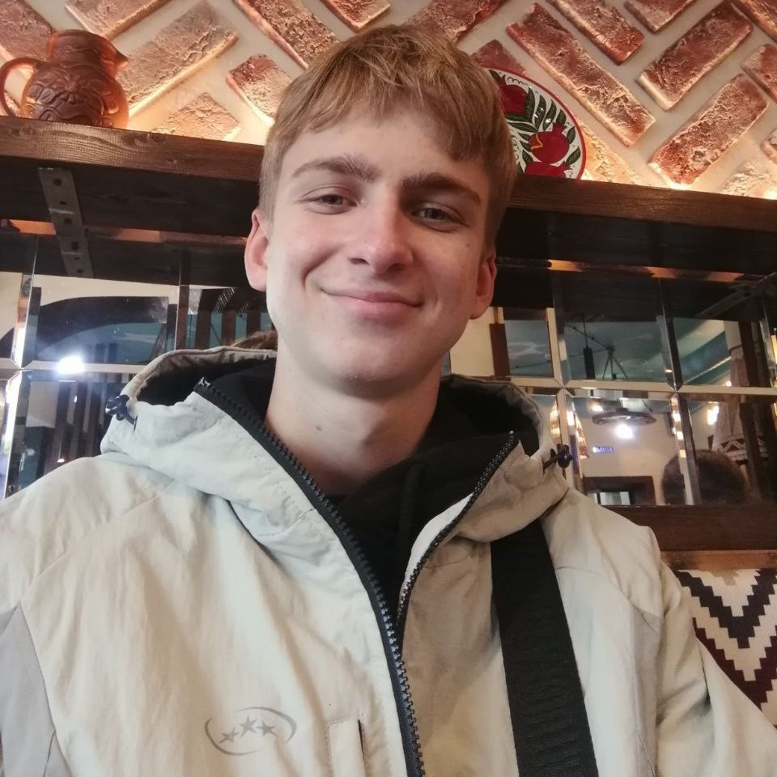

Привет! Меня зовут Богов Александр, я начинающий web-разработчик, учусь в Санкт-Петербургском Государственном Университете (СПбГУ) на направлении "Прикладная математика, фундаментальная информатика и программирование". Активно осваиваю HTML, CSS и JavaScript, а также различные фреймворки, чтобы создавать современные и удобные сайты. В свободное время практикуюсь на pet-проектах, изучаю дизайн и участвую в хакатонах. Стремлюсь развиваться в full-stack разработке, сочетая технические навыки с креативным подходом. В этом портфолио — мои первые работы, в которых я применяю знания на практике.
Богов
Александр

Мои достижения и навыки
Hard Skills:
- HTML5
- CSS
- JavaScript
- Git
- SQL
{kind=link}
Soft Skills:
- Умение работать в команде
- Быстро обучаюсь
- Понимаю, что от меня требуют
- Ответственно подхожу к выполнению различной работы
- Умею находить решение различных проблем
🚧Мои проекты🚧
Пока что у меня нет проектов, однако в скором времени они будут тут появляться. А пока что я практикуюсь, учусь и создаю новые проекты. Каждый из них — это новая задача, вызов и возможность создать что-то полезное и интересное.
Ответы на вопросы
"Почему вы выбрали именно веб-разработку, а не другие направления в IT?"
При выборе направления в IT я попытался максимально подробно и детально затронуть каждую область и понять, что же мне нравится больше всего. Мой выбор пал на веб-разработку, потому что она показалась мне довольно дружелюбной к новичкам, наглядной и интересной в плане применения своих знаний на практике
"Какой свой учебный проект вы считаете самым значимым и почему?"
Пока что у меня не так много проектов, на данный момент самый мой большой проект, который затронул наибольшее кол-во тем это данный сайт-портфолио. В нем я попытался использовать разнообразные HTML-теги для отработки использования их, а также поработал и поэксперементировал с различными CSS стилями, чуть позже планирую что-то придумать с JavaScript
"С какими сложностями вы столкнулись при изучении программирования и как их преодолели?"
Я считаю, что главная проблема, с которой я столкнулся на данном этапе изучения программирования это местами недостаточная мотивация и недостаток времени. Максимально стараюсь справляться с данными проблемами и совершенствоваться в искусстве программирования
"Был ли у вас опыт совместной работы над проектами? Что вам дал этот опыт?"
На данный момент, у меня было не очень много опыта в работе над совместными проектами. Однако тот опыт, что есть у меня дал мне небольшое понимание о том, как должно строиться взаимодействие в команде